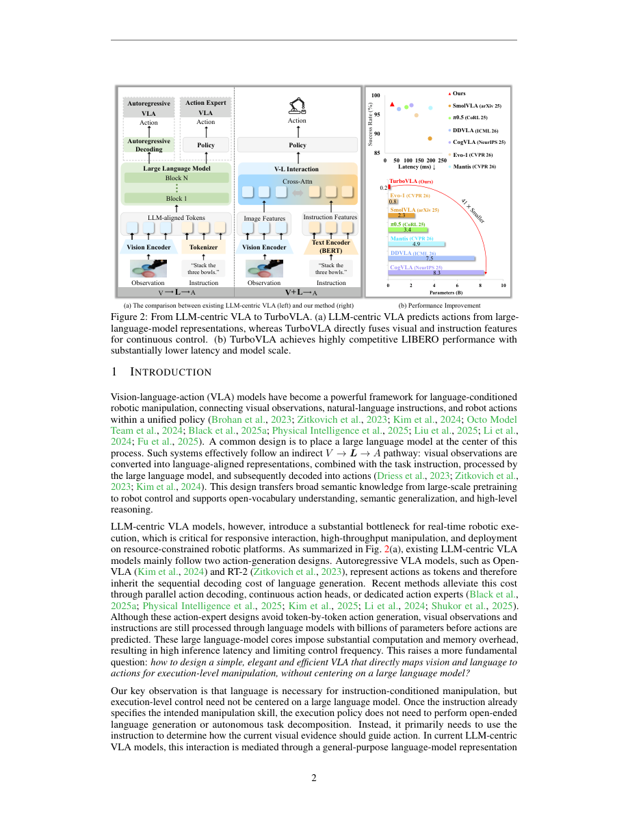

#1
★ 8/10
TurboVLA: Real-Time Vision-Language-Action Model at 32 Hz on an RTX 4090 with <1 GB VRAM
TurboVLA：在RTX 4090上以32Hz实时运行、显存不足1GB的视觉-语言-动作模型

图 Figure · Page 2 of paper
🎯 绕开大语言模型瓶颈，用轻量架构让机器人控制快20倍
A tiny 0.2B-parameter robot brain that skips the LLM bottleneck and runs at real-time speed on a consumer GPU.
🗣️ 一句话比喻 · Plain-English Analogy就像以前点外卖必须打电话给总部客服、再由客服通知餐厅，现在TurboVLA让你直接跟厨师说话——省掉了中间人，速度快了几十倍，钱也少花了。Think of old VLA models like ordering food by calling a huge corporate call center that then relays your order to the kitchen — slow and wasteful. TurboVLA lets the robot's eyes and ears talk directly to its hands, cutting out the middleman entirely and getting things done in a flash.
| 维度 | 中文 | English |
|---|---|---|
| ❓ 待解决 的问题 |
现有的机器人AI模型（VLA模型）通常把大型语言模型（LLM）放在"中控室"，所有视觉和动作信息都要先经过它处理，就像所有快递必须先进总仓再分发，效率极低。这导致每次机器人要决定"下一步怎么动"时，都要消耗大量算力和显存，在普通电脑上根本跑不起来，延迟高达几百毫秒，完全无法满足机器人实时操作的需求。 | Existing robot AI models force every decision through a giant language model, like making every delivery pass through a massive central warehouse before it goes anywhere. This makes them slow, memory-hungry, and impractical for real-time robot control — a robot arm can't wait half a second between each "what do I do next?" calculation. |
| 💡 解决 的亮点 |
• 提出全新的 V+L→A 直接映射范式，彻底抛弃大语言模型作为中间层的传统设计，大幅降低计算量和显存占用。 • 视觉和语言信息独立编码后，通过轻量级双向交互模块直接"对话"，不再绕大模型这条弯路。 • 仅用0.2B参数（比同类模型小10-50倍），却在LIBERO基准上达到97.7%的平均成功率，媲美甚至超越更大的模型。 • 推理延迟仅31.2毫秒、显存仅0.9GB，在消费级RTX 4090显卡上即可32Hz实时运行。 | • Proposes a new V+L→A direct mapping that completely removes the LLM from the decision loop, slashing compute and memory costs. • Vision and language are encoded independently and linked through a lightweight bidirectional interaction — no giant model in the middle. • Only 0.2B parameters (10–50× smaller than rivals), yet matches or beats much larger VLA models on the LIBERO benchmark. • Just 31.2 ms latency and 0.9 GB VRAM — runs at 32 Hz on a consumer RTX 4090 GPU. |
| 🧪 实验 内容 |
实验在LIBERO机器人操作基准上进行，该基准包含四个子任务套件（Spatial、Object、Goal、Long），共测试了多种主流VLA基线模型，包括OpenVLA、π₀、RoboVLMs等。评估指标为各任务套件的成功率及平均成功率，同时记录模型参数量、推理延迟（毫秒）和推理显存占用（GB）作为效率指标对比。 | Experiments were run on the LIBERO robot manipulation benchmark, which covers four task suites: Spatial, Object, Goal, and Long. The team compared TurboVLA against a range of popular VLA models including OpenVLA, π₀, and RoboVLMs. They measured task success rates across all four suites, plus model size (parameters), inference speed (milliseconds), and GPU memory usage (GB) to evaluate efficiency. |
| 📊 实验 结果 |
TurboVLA在LIBERO四个子任务上的平均成功率达97.7%（Spatial 99.2%、Object 99.3%、Goal 98.3%、Long 94.0%），优于或持平于参数量大10-50倍的模型（如π₀的3.3B参数、OpenVLA的7B参数）。推理延迟仅31.2毫秒（32Hz），推理显存仅0.9GB，而主流大模型方案通常需要数GB甚至数十GB显存且延迟远高于此。 | TurboVLA achieves 97.7% average success rate across LIBERO's four suites (Spatial 99.2%, Object 99.3%, Goal 98.3%, Long 94.0%), matching or beating models 10–50× larger (e.g., π₀ at 3.3B params, OpenVLA at 7B params). Inference latency is just 31.2 ms (32 Hz real-time), and VRAM usage is only 0.9 GB — far below the multi-GB or even tens-of-GB requirements of typical large VLA models. |
| 🏁 结论 | 本文证明了在机器人控制中，大型语言模型并非必须的中间层——通过视觉与语言的直接轻量交互，仅用0.2B参数就能在实时速度下媲美7B级别的大模型，为高效具身智能提供了全新范式。 | This paper proves that you don't need a massive language model at the heart of a robot brain — a smart, lightweight direct vision-language connection can match giant models at a fraction of the size, cost, and latency, opening a new path for practical real-world robotics. |
| 🔗 论文 链接 |
arXiv: 2607.27205v1 · 📥 PDF | |
⚙️ Method · 方法详解
传统方法把LLM当"翻译官"，先把视觉信息翻译成语言空间再生成动作，绕了一大圈。TurboVLA的思路是：视觉和语言各自独立理解，然后通过一个小型的双向"沟通桥"让两边互相交换关键信息，最后用一个紧凑的解码器直接预测机器人的连续动作序列。整个流程好比两个专家直接面对面讨论后做决定，而不是把所有信息先递给一个大管家中转，效率大幅提升。这种设计让模型参数量只有0.2B，却保留了足够的视觉-语言理解能力来完成复杂操作任务。
Instead of routing everything through a huge language model, TurboVLA lets the vision system and language system each do their own job independently, then has them talk directly through a small, efficient "bridge" module that passes information both ways. Think of it like two specialists — one who reads instructions, one who watches the scene — quickly comparing notes face-to-face instead of filing reports through a slow bureaucratic middleman. A compact decoder then turns their combined understanding directly into a sequence of robot movements. The whole system stays tiny (0.2B parameters) while still understanding complex tasks.
📐 Key Formulas · 关键公式
\[V + L \rightarrow A\]
💡 TurboVLA的核心范式：视觉(V)和语言(L)直接融合映射到动作(A)，无需经过大语言模型中转，区别于传统的 V→L→A 串行流水线。
TurboVLA's core paradigm: visual observations (V) and language instructions (L) are jointly mapped directly to actions (A), bypassing the conventional serial V→L→A pipeline through a large language model.
🌟 Why It Matters · 为什么重要
TurboVLA让智能机器人不再需要昂贵的服务器级硬件，普通消费级显卡即可实时运行，大幅降低了将AI机器人推向实际应用的门槛。这意味着未来家用机器人、工厂自动化设备有望用更低廉的硬件实现更灵活的智能操作。
TurboVLA means smart robot arms could one day run on affordable consumer hardware instead of expensive server racks, making real-world AI robotics far more accessible. This could accelerate the deployment of intelligent robots in homes, factories, and hospitals without breaking the bank.